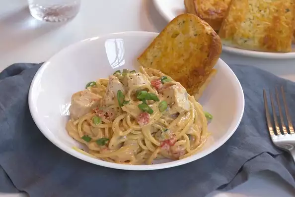

Chicken Spaghetti

Description
This easy-to-make chicken spaghetti is a great last minute chicken recipe for the whole family. With just a few
ingredients, this dish will pack a little kick and be a quick favorite. Also freezes well.
Serve with garlic bread if desired.
Ingredients
- 1 (16 ounce) package spaghetti
- 1 (10.75 ounce) can condensed cream of mushroom soup
- 3/4 pound processed cheese
- 1 (10 ounce) can diced tomatoes with green chile peppers
- 1 cup chopped green onion
- 4 1/2 breast, bone removeds skinless, boneless chicken breast halves - boiled, cut into bite size pieces
Steps
- Bring a large pot of lightly salted water to a boil. Add pasta and cook for 8 to 10 minutes or until al
dente; drain.
- Heat soup in a large saucepan over low heat. Add cheese and melt, stirring. When cheese is almost melted,
stir in tomatoes with green chile peppers and green onion. Simmer over low heat for 2 to 3 minutes,
stirring.
- Add spaghetti and mix well, then stir in chicken. Heat through and serve.